측량및지형공간정보기사 (2007-03-04 기출문제)
1과목: 측지학 및 위성측위시스템
1. GPS 위성과 수신기 간의 거리를 측정할 수 있는 재원과 관계가 먼 것은?
- P code
- CA code
- L1 Carrier
- E1
(정답률: 62%)

2. 광행차와 관계가 없는 것은?
- 관측자의 속도가 커지면 광행차도 커진다.
- 지구의 공전 때문에 나타난다.
- 영국의 브레들리(Beadley)가 측정했다.
- 거리가 가까우면 광행차는 커진다.
(정답률: 57%)
3. 다음 사항들 중에서 설명이 바르지 않은 것은?
- 축지학이란 지구내부의 특성, 지구의 형상, 지구표면의 상호 관계를 정하는 학문이다.
- 기하학적 축지학에는 천문측량, 위성측량, 높이 검정 등이 있다.
- 물리학적 축지학에서는 지구의 형상해석, 중력측정, 지자기측정 등을 포함한다.
- 측지측량(대지측량)이란 지구의 곡률을 고려하지 않은 측량으로서 1km 이내를 평면으로 취급한다.
(정답률: 47%)
4. 중력보정에 대한 설명으로 옳지 않은 것은?
- 고도(Elevaltion)보정-지표상의 한점에서 측정된 중력값을 지오이드 면상의 중력값으로 보정하는 것이다.
- 지형(Terrain)보정-지형이 평평하다는 가정을 보정해 주는 것으로 그 값은 항상 (-)가 된다.
- 부게(Bouger)보정-측정점과 지오드드면 사이에 존재하는 물질이 중력에 미치는 영향에 대한 보정이다.
- 아이소스타시(Isostatic)보정-아이소스타시 지각균형 이론에 의한 보정이다.
(정답률: 60%)
5. 측지선에 대한 설명에서 맞는 것은?
- 지표면(평면) 상의 2점을 잇는 최단거리가 되는 직선
- 지표면(평면) 상의 2점을 잇는 최장거리가 되는 직선
- 지구면(곡선면) 상의 2점을 잇는 최단거리가 되는 직선
- 지구면(곡선면) 상의 2점을 잇는 최장거리가 되는 직선
(정답률: 54%)
6. 다음 중 인공위성의 궤도요소가 아닌 것은?
- 궤도의 경사각
- 이심률
- 승교점의 적경
- 궤도의 방향
(정답률: 54%)
7. 자기폭풍의 원인은 무엇인가?
- 태양열
- 달의 공전
- 태양 흑점
- 지구 내부 폭발
(정답률: 65%)
8. 다음 중 지구좌표에 속하지 않는 것은?
- 지평좌표
- 경위도좌표
- UTM좌표
- UPS좌표
(정답률: 47%)
9. 평균 해수면(지오이드면)으로부터 어느 지점까지의 연직거리는?
- 점표고(Orthometric height)
- 역표고(Dynamic height)
- 타원체고(Ellipsoidal height)
- 지오이드고(Geoidal height)
(정답률: 40%)
10. 3차원 좌표에 속하지 않는 것은?
- 원주좌표
- 평면직교좌표
- 구면좌표
- 3차원직교좌표
(정답률: 29%)
11. 다음 중 GPS 활용 분야로 적합하지 않은 것은?
- 차량향법
- 수심측량
- 구조물 모니터링
- 국가기준점 결정
(정답률: 54%)
12. 중력이상에 관한 설명으로 옳지 않은 것은?
- 중력이상이란 보정된 기준면의 중력값과 표준중력의 차를 나타낸다.
- 중력이상의 주된 원인은 지하의 밀도가 고르게 분포되어 있지 않기 때문이다.
- 밀도가 큰 물질이 지표면 가까이 있을 때는 음(-) 값을 갖는다.
- 중력이상을 해석함으로써 지하 구조나 지하 광물체의 탐사에 이용된다.
(정답률: 50%)
13. GPS 신호는 두 개의 주파수를 가진 반승파에 의해 전송된다. 두 개의 주파수를 쓰는 이유는?
- 수신기 시계오차 제거
- 대류권 오차 제거
- 전리층 오차 제거
- 다중경로 제거
(정답률: 65%)
14. 지표면상의 구면 삼각형 ABC의 세각을 관측한 결과 ∠A=51° 30', ∠B=65° 45', ∠C=64°, 35' 이었다. 구면 삼각형의 면적은? (단, 지구반경 R=6370km이며, 측각오차는 없는 것으로 간주한다.)
- 1596427.4 km2
- 1298366.4 km2
- 142342.4 km2
- 18833.4 km2
(정답률: 65%)
15. GPS의 정확도가 1ppm 이라면 기선의 길이가 10km일 때 GPS를 이용하여 어느 정도로 정확하게 위치를 알아낼 수 있다는 말인가?
- 수 km
- 수 m
- 수 cm
- 수 mm
(정답률: 69%)
16. 지구자기 3요소 중 지구 자기장이 수평면과 이루는 각을 무엇이라 하는가?
- 편각
- 복각
- 수평분력
- 연직분력
(정답률: 20%)
17. 삼각점 성과표에 대한 설명 중 옳은 것은?
- 해당 삼각점의 위치는 경위도 좌표뿐만 아니라, 표고도 표시되어 있다.
- 삼각점 간의 거리는 진수값으로 표시되며, 단위는 m이다.
- 해당 삼각점위치의 평면직각좌표값 X, Y는 모두 (+)값으로만 표시된다.
- 진북방향각은 방위각에 방향각을 더한 값이다.
(정답률: 22%)
18. 위성의 고도가 낮아지면서 증대되는 오차는?
- Anti-Spooting
- 궤도오차
- 시계오차
- 대기오차
(정답률: 50%)
19. 다음 중 가장 정확하게 위치를 결정할 수 있는 자료처리법은?
- 코드를 이용한 단독측위
- 코드를 이용한 상대측위
- 반송파를 이용한 단독측위
- 반송파를 이용한 상대측위
(정답률: 47%)
20. 우리나라에서 현재 사용하고 있는 지도 투영법은?
- 람베르트 도법
- 키시니 도법
- 황메르카도르니 도법
- 정사투영도법
(정답률: 67%)
2과목: 응용측량
21. 그림과 같은 5각형 ABCDE를 동일면적의 사각형 AFDE로 만들기 위해 DC의 연장선에 경계점 F를 설치하였다. BC=25m, ∠ACB=30°, ∠BCF=80° 일 때 CF의 거리는 얼마인가?
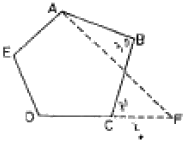
- 12.7m
- 12.9m
- 13.3m
- 13.5m
(정답률: 24%)
22. 하천측량에서 거리표 설치시 유의할 사항 중 틀린 것은?
- 유심선에 직각으로 1km 거리마다 양안에 설치하는 것을 표준으로 한다.
- 양안의 거리표를 시준하는 선을 유심선에 직교 되어야 한다.
- 설치 위치는 망실, 파손 및 변동의 염려가 없고 공사에 지장이 없는 위치로 한다.
- 거리표는 하구나 합류점을 기점으로 한다.
(정답률: 25%)
23. 다음과 같이 면적을 m:n으로 분할 하고자 할 때
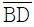
의 길이를 구하기 위한 식으로 적절한 것은?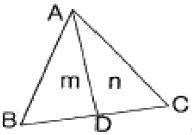
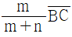
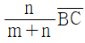
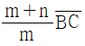
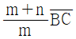
(정답률: 47%)
24. 터널측량은 크게 갱외측량, 갱내측량, 갱내외 연결측량으로 나누어지며, 일정한 작업순서를 가진다. 다음 중 터널측량 작업순서가 올바른 것은?
- 예측→지표설치→답사→지하설치
- 답사→예측→지표설치→지하설치
- 예측→답사→지하설치→지표설치
- 답사→지표설치→예측→지하설치
(정답률: 50%)
25. 곡선반경이 200m이고 레일간격이 1067m이다. 이 때 곡선위를 100km/h로 주행할 때 캔트(cant)는 얼마인가? (단, g=9.8m/sec2)
- 12cm
- 22cm
- 32cm
- 42cm
(정답률: 34%)
26. 하천측량에서 평균유속을 구하는 식으로 3정법을 사용할 때의 공식은? (단, Vm=평균유속, V0.2, V0.4, V0.6, V0.8=수면에서 수심의 20%, 40%, 60%, 80% 되는 곳의 유속)
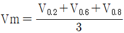
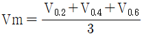
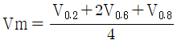
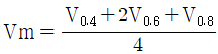
(정답률: 57%)
27. 다음 그림과 같이 터널에서 직접 수준측량을 하였을 때 B점의 지반고 HB를 구하는 식으로 옳은 것은? (단, HA는 기지점 A의 지반고이다.)
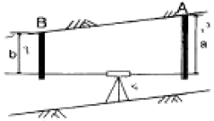
- HB=HA-a+b
- HB=HA+a+b
- HB=HA-a+b
- HB=HA-a-b
(정답률: 42%)
28. 그림과 같이 약 200m의 하천이 있어서 P 및 O에 레벨을 세우고 교로 수준측량을 하였다. A점으로부터 D점까지의 각 측점에서 전후 표척의 표고치는 각각 다음과 같다. D점의 표고는? (단, A점의 표고는 2.545m, A→B=-0.512m, 레벨 P에서 B→C = -0.229m, 레벨 Q에서 C→B = +0.267m, C→D = +0.636m)
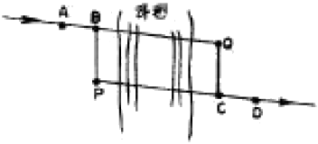
- 2.401m
- 2.411m
- 2.421m
- 2.431m
(정답률: 38%)
29. 원화곡선으로 쓰이지 않는 것은?
- 3차 포물선
- 클로소이드 곡선
- 2차 포물선
- 램니스케이트 곡선
(정답률: 47%)
30. 단곡선 설치시 교각(I)은 60°, 반경 (R)은 300m인 단곡선에서 접선의 길이(T.L)는 얼마인가?
- 150.00m
- 173.21m
- 259.81m
- 519.62m
(정답률: 15%)
31. 대축척인 지적도를 작성하는 데에는 일반적으로 기존의 삼각점만으로는 충분하지 않다. 이 때 필요한 기준점 설치를 위한 기초측량에 해당되지 않는 것은?
- 지적도근측량
- 세부측량
- 지적삼각보조측량
- 지적삼각측량
(정답률: 43%)
32. 다음 중 평수위에 대한설명으로 옳은 것은?
- 365일 이상 이보다 적어지지 않는 수위
- 275일 이상 이보다 적어지지 않는 수위
- 어떤 기간 중 이것보다 높은 수위와 낮은 수위의 관측회수가 똑같은 수위
- 일정 기간 중 제일 많이 생긴 수위
(정답률: 39%)
33. 댐 측량 중에서 하천의 개발계획, 즉 발전, 치수, 농업 및 공업용수 등의 종합 계획에 중점을 두고 실시하는 측량은?
- 조사계획측량
- 실시설계측량
- 안전관리측량
- 공사측량
(정답률: 31%)
34. 다음 중 터널 곡선부의 측설법으로 적절치 못한 것은?
- 중앙종거법
- 현편거법
- 트래버스 측량에 의한 방법
- 점선편거법
(정답률: 0%)
35. 다음 그림과 같은 토지의 면적을 심프슨(Simpson)제2법칙으로 구한 값이 60m2이었다. AD의 거리는 얼마인가? (단, 구간거리는 일정)
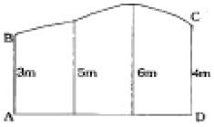
- 4.0m
- 10.0m
- 12.0m
- 13.3m
(정답률: 43%)
36. 단곡선에 있어서 교각(I)이 50°, 곡선반경(R)이 300m, 곡선시점(B, C)의 위치가 No. 10+14m일 때 도로의 기점에서 곡선의 종점(E.C)까지의 거리는? (단, 중심 말뚝간격은 20cm임)
- 261.799m
- 361.799m
- 375.799m
- 475.799m
(정답률: 20%)
37. 노선의 곡률반경이 150m이고, 곡선길이가 20m일 때 클로소이드 매개변수 A의 값은?
- 24.77m
- 34.77m
- 44.77m
- 54.77m
(정답률: 12%)
38. 경관을 분류할 때 경관구성요소에 의한 분류기준 중 인식의 주체가 되는 계는 무엇인가?
- 대상계
- 경관장계
- 시점계
- 상호성계
(정답률: 19%)
39. 노선측량에서 중단면도를 작성할 때, 표기 사항이 아닌 것은?
- 측점 간 수평거리
- 측점의 계획단면
- 각 측점의 기점으로부터의 누가거리
- 측점에서의 계획고
(정답률: 47%)
40. 10m 간격의 등고선으로 표시되어 있는 구릉지에서 구적기로 면적을 구하여 A0=100ㅡ2, A1=570m2, A2=1480m2, A3=4320m2, A4=8350m2을 얻었을 때 등고선법(각주 공식)에 의한 A0~A4의 체적은?
- 130223.3m2
- 131233.3m2
- 103233.3m2
- 113233.3m2
(정답률: 29%)
3과목: 사진측량 및 원격탐사
41. 디지타이징에 의한 수치지도 제작시 발생할 수 있는 오차유형이 아닌 것은?
- 종이지도 신축에 의한 위치 오차
- 세선화(thinning) 과정에서의 형상 오차
- 선분 교차점에서의 교차 미달(undershooting) 현상
- 인접 다각형 경계선 중복 부분에서의 갭(gap) 발생
(정답률: 50%)
42. 도화기로 등고선을 그릴 때 등고선의 높이 오차를 3m 이내로 하려면 측정하는 시차차의 오차는 최대 몇 mm 이내이어야 하는가? (단, 사진축척 : 1/35000, 초점거리 : 150mm, 화면크기 : 23cm×23cm, 사진의 중복도 : 60%)
- 0.01mm
- 0.⑤mm
- 0.mm
- 0.5mm
(정답률: 54%)
43. GIS의 지형분석에서 불규칙하게 분포된 위치에서의 표고를 추출하여 이등 위치관계를 삼각형 형태로 연결하여 지형을 표현하는 방식은?
- Overlay방식
- Grid방식
- TIN방식
- 보간방식
(정답률: 43%)
44. 촬영계획에 관한 설명으로 틀린 것은?
- 종중복도는 보통 60% 정도를 하며 목적은 입체시에 있다.
- 횡중복도는 스트립간의 접합을 목적으로 하며 보통 30%정도로 한다.
- 지상의 기복이 촬영고도의 10% 이상인 지역에서의 종복도를 10-20% 증가시킨다.
- 촬영방향은 보통 남북방향으로 하는 것이 좋다.
(정답률: 39%)
45. 항공사진측량에 대한 설명 중 틀린 것은?
- 스트립이 2개 이상이면 복 스트립이라 한다.
- 블록은 스트립이 횡방향으로 접합된 형태이다.
- 스트립은 촬영진행방향으로 접합된 형태이다.
- 스트립이 3개 이상인 것을 모형이라 한다.
(정답률: 43%)
46. 사진측량에서 일반적으로 허용되는 항공사진측량의 정확도 범위로 옳은 것은?
- 수평위치 : 촬영축척 분모수에 대해 40~50μm
수직위치 : 촬영고도의 0.01~0.02% - 수평위치 : 촬영축척 분모수에 대해 10~30μm
수직위치 : 촬영고도의 0.⑤~0.01% - 수평위치 : 촬영축척 분모수에 대해 40~50μm
수직위치 : 촬영고도의 0.⑤~0.01% - 수평위치 : 촬영축척 분모수에 대해 10~30μm
수직위치 : 촬영고도의 0.01~0.02%
(정답률: 24%)
47. 다음 중 지도에 표현되는 도형정보의 내용으로 옳지 않은 것은?
- 지표 활용 등의 속성정보
- 표고 등의 지형정보
- 도로 형상 등의 지리정보
- 시설물 등의 공간좌표
(정답률: 58%)
48. 다음 중 사진 판독의 요소에 해당하지 않는 것은?
- 색조, 모양
- 과고감, 상호위치 관계
- 형상, 음영
- 촬영날짜, 촬영고도
(정답률: 58%)
49. 평균해면(平均海面)에서의 고도가 2850m인 비행기에서 화면거리가 153mm의 카메라로 평균해면에서의 고도가 500m인 평지를 촬영했을 때 이 사진의 축척은?
- 1/15380
- 1/18627
- 1/1736
- 1/1536
(정답률: 8%)
50. 어떤 지역을 축척 1/15000으로 촬영하였다. 촬영한 연직사진을 C=계수가 12000인 도화기로 도화할 수 있는 최소 등고선간격이 1.5m였다면 기선고도비는 얼마인가? (단, 화면크기 : 23cm×23cm, 횡종복도 : 30%, 종중복도 : 60%)
- 0.67
- 0.77
- 1.00
- 1.89
(정답률: 42%)
51. 자료 표준화의 이점을 설명한 것으로 가장 거리가 먼 것은?
- 다양한 자료에 대한 접근이 용이하기 때문에 자료를 쉽게 갱신할 수 있다.
- 수치적인 공간자료가 서로 다른 체계 사이에서 변형되지 않고 전달된다.
- 자료의 소유권에 대한 요구가 작아져 사용자가 쉽게 사용할 수 있다.
- 자료를 공유함으로써 비용절감 효과를 볼 수 있다.
(정답률: 50%)
52. 다음 사진지도에 대한 설명 중 틀린 것은?
- 카메라의 경사, 지표면 측량을 일부만 조정하여 등고선이 삽입된 지도가 반조정집성 사진지도이다.
- 카메라의 경사, 지표면의 비고를 수정하고, 등고선이 삽입된 지도가 정사투영 사진지도이다.
- 카메라의 경사에 의한 변위, 지표면의 비고에 의한 변위를 수정하지 않고 접합한 것이 약집성 사진지도이다.
- 카메라의 경사에 의한 변위를 수정하고, 축척도 조정된 것이 조정집성 사진지도이다.
(정답률: 0%)
53. 위성영상처리 과정 중 전처리(preprocessing)에 속하는 것은?
- 수치지형모델(DTM) 생성 및 지도제작
- 방사보정(또는 복사보정)과 기하보정
- 영상분류(image Classification)의 판독
- 영상자료 잔송 및 압축
(정답률: 45%)
54. 상호표정의 불완전모형을 설명한 것으로 가장 적합한 것은?
- 입체모형에서 회전인자를 사용할 수 없는 모형
- 입체모형에서 공면조건이 없는 모형
- 입체모형에서 일부가 구릉이나 수면으로 가려져 상호표정에 필요한 5점을 이상적으로 배치할 수 없는 모형
- 입체모형에서 평행변위부 수정을 위하여 기계적 방법을 사용하여야 하는 모형
(정답률: 47%)
55. 두 격자자료의 입력값이 각각 0과 1일 때, 각 논리연산자 AND, OR, XOR에 의한 결과는? (단, AND, OR, XOR의 순서이고 참일 때 1이고 거짓일 때 0 이다.)
- 1-0-1
- 1-1-0
- 0-1-0
- 0-1-1
(정답률: 43%)
56. 다음 중 영상자료의 저장형식이 아닌 것은?
- BIL(Band Interleaved by Line)
- BSO(Band Sequential)
- BSI(British Standards Institute)
- BIP(Band Interleaved by Pixel)
(정답률: 57%)
57. 사진측량에 대한 설명으로 맞지 않는 것은?
- 정량적인 관측은 물론 정성적 해석이 가능하다.
- 사진을 이용하여 면의 지점의 평면위치와 높이를 동시에 측정할 수 있다.
- 지상에서 촬영한 사진은 사용할 수 없다.
- 작은 범위의 측량에는 비경제적이다.
(정답률: 54%)
58. 일반적으로 원격탐사 영상의 해상도는 4가지로 구분된다. 그 중 원격탐사 영상의 개개 화소가 표현 가능한 지상의 면적을 의미하는 것은?
- 분광해상도(Spectral Resolution)
- 방사해상도(Radiometric Resolution)
- 공간해상도(Spatial Resolution)
- 주기해상도(Temppral Resolution)
(정답률: 19%)
59. 항공사진을 입체시 할 경우 과고감 발생에 영향을 주는 요소와 거리가 먼 것은?
- 사진의 명암과 그림자
- 촬영고도와 기선길이
- 중복도
- 사진기의 초점거리
(정답률: 47%)
60. 대공표지에 대한 설명 중 틀린 것은?
- 대공표지는 사진상에서 정확하게 그 위치를 결정하고자 할 때 설치한다.
- 설치 장소의 상공은 45° 이상의 시계를 확보하여야 한다.
- 대공표지를 하고자 하는 점이 자연점으로 표지를 설치하지 않고도 사진상에 명료하게 확인되는 경우에는 생략할 수 있다.
- 대공표지는 항공사진 촬영이 끝나면 즉시 철거하여야 한다.
(정답률: 54%)
4과목: 지리정보시스템
61. 다음 경중률(weight)에 대한 설명 중 틀린 것은?
- 관측값의 신뢰도
- 관측획수에 반비례
- 관측거리에 반비례
- 평균제곱근오차의 제곱에 반비례
(정답률: 27%)
62. 노선거리 16km인 두 점 간의 수준차를 직접 수준측량에 의해 측량한 표준오차가 ±20mm이라면 1km 당 표준오차는?
- 0.625mm
- 1.25mm
- 2.50mm
- 5.00mm
(정답률: 29%)
63. 다음과 같은 삼각망에서 CD의 방위는?
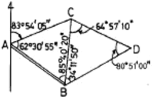
- S 12° 51'50"E
- S 12° 11'50"W
- S 23° 51'10“E
- S 23° 45'30"W
(정답률: 40%)
64. 거리측량에 있어서 우연오차에 관한 설명으로 옳지 않은 것은?
- 우연오차는 부호화 크기가 불규칙하게 나타난다.
- 정오차와 과오를 소거시키고 남은 오차이다.
- 같은 크기의 정(+)오차와 부(-)오차의 발생확률은 같다.
- 오차의 크기나 방향이 일정한 오차이다.
(정답률: 40%)
65. 광파거리측량기가 많이 이용되는 이유와 가장 거리가 먼 것은?
- 정확도가 높다.
- One-men Surveying 이 가능하다.
- 기상조건의 영향을 받지 않는다.
- 전파거리측량기에 비해 조작시간이 짧다.
(정답률: 54%)
66. 큰 계곡이나 하천을 횡당하며 수준측량을 할 경우에 사용하는 수준측량의 방법으로 가장 알맞은 것은?
- 간접 수준측량
- 교호 수준측량
- 시거 수준측량
- 종단 수준측량
(정답률: 47%)
67. 다음 그림과 같은 편심관측에서 T'는 얼마인가? (단, S1=S2=2km, e=0.2m, ø=120°, T=60°)
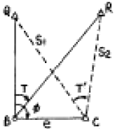
- 59° 59' 43"
- 60° 00' 00"
- 60° 00' 17"
- 60° 00' 34"
(정답률: 50%)
68. 수준측량에서 전시와 후시의 거리를 같게 하는 것이 좋은데 가장 큰 이유는?
- 레벨의 시준선 오차를 소거
- 망원경의 시야 변경
- 구차 소거
- 기차의 영향을 작게 하기 위해서
(정답률: 50%)
69. 표준지와 비교하여 7mm가 긴 30m 줄자로 경사면의 두 점을 측정한 결과 180m였다. 경사보정이 1cm일 때 고저차는 얼마인가?
- 0.189m
- 0.897m
- 1.898m
- 2.897m
(정답률: 8%)
70. 다음과 같이 “사과길”로부터 은행건물의 위치를 정확히 알고자 다음과 같은 측량결과를 얻었다. CD의 거리는? (단, ∠EAB=62", AB=7.40m, BC=10m, ∠ABC=∠ADC=90°)
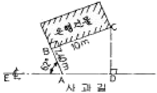
- 12.44m
- 12.30m
- 12.00m
- 11.23m
(정답률: 44%)
71. 주로 지역 내의 지성선 위치 및 그 위의 각점 표고를 실측도시하여 이것을 기초로 현지에서 지형을 관찰하면서 적당하게 등고선을 삽입하는 방법으로 비교적 소축척 산지에 이용되는 방법은?
- 횡단점법
- 직접법
- 좌표점법
- 종단방법
(정답률: 44%)
72. P점의 표고를 구하기 위하여 그림과 같이 A, B의 수준점에서 직접수준측량을 하여 각각 다음 값을 얻었다. P점의 표고는 얼마인가?
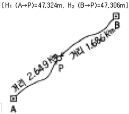
- 47.313m
- 47.315m
- 47.317m
- 47.319m
(정답률: 25%)
73. 다음 그림에 대한 CD측선의 방위각은?
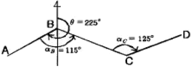
- θCD=55°
- θCD=255°
- θCD=135°
- θCD=170°
(정답률: 53%)
74. 방위각이 255°인 측선의 방위는?
- S75" W
- S15" W
- S75" E
- S15" E
(정답률: 50%)
75. 다각측량에서 거리 및 촉각의 정도는 동등하게 하는 것이 좋다고 한다. 거리의 허용오차를 1/10000 이라고 할 때 측각의 허용 오차는 약 얼마인가?
- 10“
- 20“
- 30“
- 40“
(정답률: 44%)
76. 축척 1“50000 지형도에서 3% 기울기의 노선을 선정하려면 이 노선상의 주곡선 긴 도상 거리는? (단, 주곡선 간격은 20m임)
- 20.4mm
- 13.3mm
- 10.6mm
- 7.5mm
(정답률: 31%)
77. 갑, 을 두 사람이 통일조건하에 A-B 거리를 측정하여 다음 결과를 얻었다. 이 때 최확값은 얼마인가?
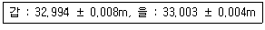
- 32.997m
- 33.001m
- 33.0⑤m
- 33.009m
(정답률: 43%)
78. 표준길이보다 3cm 짧은 30m의 줄자를 이용하여 측정한 거리가 450m 이었다면 실제거리는 얼마인가?
- 449.45m
- 449.55m
- 485.45m
- 485.55m
(정답률: 32%)
79. 다음 중 삼변측량에 대한 설명으로 옳지 않은 것은?
- 삼각측량에서 수평각을 관측하는 대신에 삼변의 길이를 관측하여 삼각점의 위치를 정확히 구하는 측량이다.
- 관측량의 수에 비하여 조건식의 수가 적고 측량값의 기상보정이 애매한 것이 결점이다.
- 삼변측량에서 변장 측정값에는 오차가 따르지 않는다고 생각한다.
- 전파나 광파를 이용한 거리측량기기가 발달하여 높은 정밀도로 장거리를 측량할 수 있게 됨으로써 삼변측량법이 발전되었다.
(정답률: 59%)
80. 삼각망 구성에 있어서 가장 정밀도가 높은 삼각망은?
- 유심 삼각망
- 사변형 삼각망
- 단열 삼각망
- 종합 삼각망
(정답률: 57%)
5과목: 측량학
81. 측량성과의 사용료 감면대상 및 감면범위가 틀린 것은?
- 국가 또는 지방자치단체가 사용하는 경우 : 100퍼센트
- 연구기관이 연구용으로 사용하는 경우 : 50퍼센트
- 정부투자기관이 사용하는 경우 : 50퍼센트
- 교육기관이 교육용으로 사용하는 경우 : 100퍼센트
(정답률: 32%)
82. 다음은 측량업의 등록을 취소하거나 1년 이내의 기간을 정하여 영업의 정지를 명할 수 있는 경우이다. 틀린 것은?
- 고의로 인하여 측량을 부정확하게 한 때
- 정당한 사유없이 1년동안 영업을 하지 않은 때
- 과실로 인하여 측량을 부정확하게 한 때
- 측량업의 등록기준에 미달하게 된 때
(정답률: 42%)
83. 측량업자인 법인이 파산 또는 합병외의 사유로 해산한 때 신고 의무지는?
- 청산인
- 관리인
- 상속인
- 법인대표
(정답률: 36%)
84. 지명의 고시에 포함되어야 할 사항으로 잘못된 것은?
- 제정된 지명
- 변경된 지명
- 조재지(행정구역으로 표시한다.)
- 위치(X, Y 좌표로 표시한다.)
(정답률: 40%)
85. 1:5,000 지형도 도식적용규정에서 규정하고 있는 건물에 대한 사항으로 틀린 것은?
- 건물을 독립건물 및 밀집건물 등으로 구분하여 표시한다.
- 건물 한 변의 길이가 도상 0.4mm 미만으로서 건물의 모양에 명함이 없는 돌출상태는 생략할 수 있다.
- 일시적인 가건물도 표시하는 것을 원칙으로 한다.
- 밀집건물이란 시가지등에 있어서 건물이 밀집하여 개개의 건물을 표시하기 곤란할 경우에 그 경황을 그르치지 않는 범위내에서 밀집하여 표시하는 건물을 말한다.
(정답률: 0%)
86. 건설교통부장관 또는 국토지리정보원장의 권한을 측량협회에 위탁할 수 있는 사항은?
- 측량영업실적 신고
- 측량업자의 등록취소 및 영업정지의 처분
- 공공측량의 심사
- 측량기술자의 보수교육
(정답률: 43%)
87. 공공측량의 측량성과를 보관하는 곳은?
- 건설교통부
- 공공측량계획기관
- 공공측량작업기관
- 시ㆍ군ㆍ구 지적서고
(정답률: 50%)
88. 측량심의회의 심의 사항이 아닌 것은?
- 기본측량에 관한 계획의 수립 및 실시
- 측량기술의 연구ㆍ발전
- 공공측량의 심사
- 공공측량 및 일반측량에서 제외되는 측량의 범위
(정답률: 40%)
89. 측량법에서 정의한 측량계획기관이란?
- 기본측량 및 공공측량에 관한 계획을 수립하는 자
- 일반측량에 관한 계획을 수립하는 자
- 당해 측량에서 얻은 최종성과를 보관하는 자
- 측량성과를 얻을 때까지의 측량에 관한 작업의 기록을 정리하는 자
(정답률: 17%)
90. 측량법의 규정에 의한 측량업의 종류에 속하지 않는 것은?
- 영상처리업
- 연안조사측량업
- 지하시설물측량업
- 지적측량업
(정답률: 30%)
91. 측량업의 등록을 한 자는 등록사항 중 변경사항이 있을 경우 변경등록을 하여야 한다. 이 때 변경등록을 할 사항이 아닌 것은?
- 주된 지점의 조재지
- 영업소 및 작업실의 면적
- 기술능력 및 장비
- 주된 영업소의 소재지
(정답률: 42%)
92. 공공측량으로 지정할 수 있는 일반측량에 관한 설명 중 옳은 것은?
- 측량노선의 길이가. 5km 이상인 수준측량
- 측량실시 지역의 면적이 500m2 이상인 삼각측량
- 촬영지역의 면적이 1km2 이상인 측량용 사진의 촬영
- 측량노선의 길이가 1km 이상인 다각측량
(정답률: 50%)
93. 다음 설명 중 측량의 기준에 대한 설명이 잘못된 것은?
- 측량의 원점은 대한민국경위도원점 및 수준원점으로 한다.
- 지리학적 경위도는 세계축지계에 따라 측정한다.
- 거리 및 면적은 지구표면상의 값으로 한다.
- 위치는 지리학적 경위도와 평균해면으로부터의 높이로 표시한다.
(정답률: 20%)
94. 다음 중 난외주기(欄外註記)에 포함되지 않는 사항은?
- 지명(地名)
- 도엽번호(桃葉番號)
- 축척(縮尺)
- 편집년도(編輯年度)
(정답률: 43%)
95. 다음 중 측량기기 성능검사 방법의 구분으로 잘못된 것은?
- 분해검사
- 외관검사
- 구조ㆍ기능검사
- 측정검사
(정답률: 40%)
96. 기본측량실시로 인한 손실보상의 협의 대상자는 다음 중 누구인가?
- 건설교통부장관과 국토지리정보원장
- 국토지리정보원장과 손실을 받은 자
- 측량계획기관과 국토지리정보원장
- 손실을 받을 자와 측량계획기관
(정답률: 47%)
97. 우리나라 수준원점의 수치로서 옳은 것은?
- 인천만 평균해면상의 높이로부터 26.6871m
- 인천만 평균해면상의 높이로부터 26.9871m
- 인천만 평균해면상의 높이로부터 36.6871m
- 인천만 평균해면상의 높이로부터 36.9871m
(정답률: 28%)
98. 기본측량의 경우 측량의 실시공고를 하여야 하는데 다음 중 공고사항에 포함되지 않는 것은?
- 측량의 목적
- 측량의 실시지역
- 측량의 실시기간
- 측량의 정확도
(정답률: 50%)
99. 수치지형도는 몇 년에 1회 이상 주기적으로 자료보완이 이루어져야 하는가?
- 1년
- 2년
- 3년
- 4년
(정답률: 43%)
100. 1/25,000 지형도상의 직각좌표는 몇 km 단위로 분할하여 표시 하는가?
- 1 km
- 2 km
- 3 km
- 4 km
(정답률: 50%)